Design concept
City in Nature — warm & organic
The visual concept comes from the knitted artworks of Susanna Bauer, who stitches delicate threads into dried leaves. It mirrors the relationship between urban architecture and natural plants — different elements carefully connected, coexisting in one environment.
Brown and wooden tones stand for soil, dried leaves and nature; warm cream stands for the soft threads in Bauer's work. Natural textures, soft shapes and spacious layouts make people feel comfortable, curious and inspired to explore nature in the city.
- Natural
- Warm
- Organic
- Calm
- Sustainable
- Community-focused
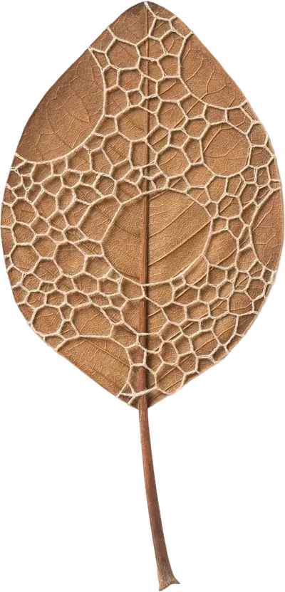
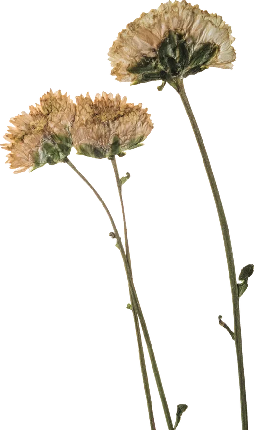
Moodboard
Web inspiration
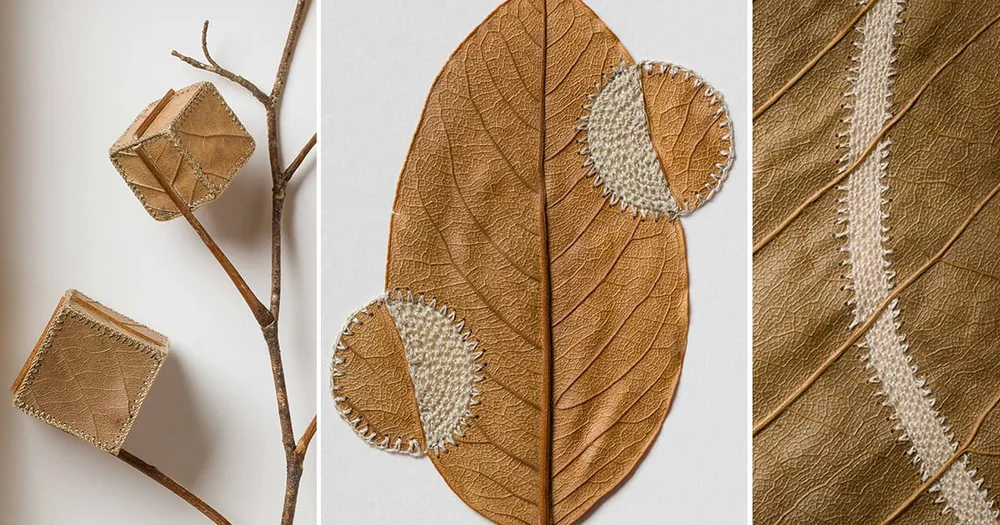
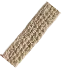
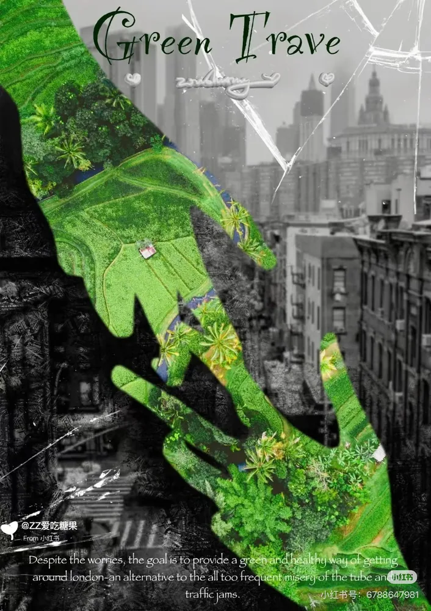
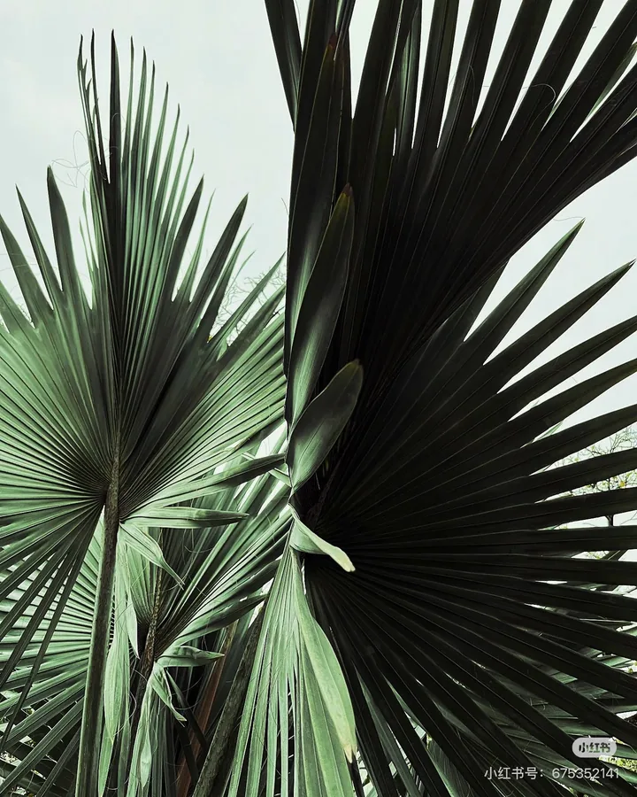
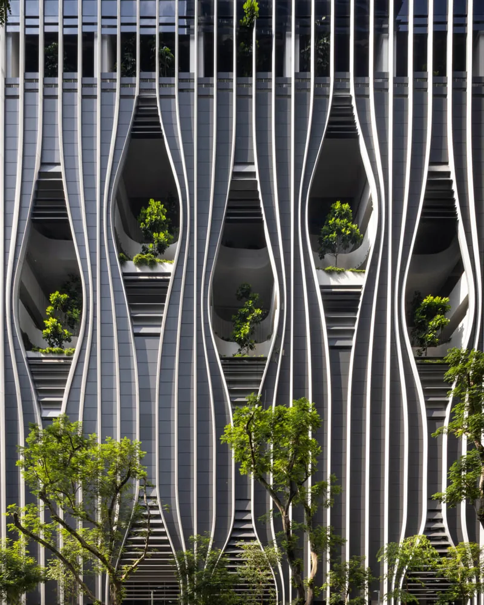
Branding
Colour & type
Click a colour to copy its hex
Logo
From sketch to woven leaf
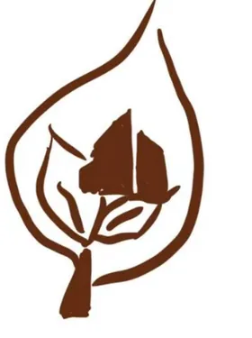
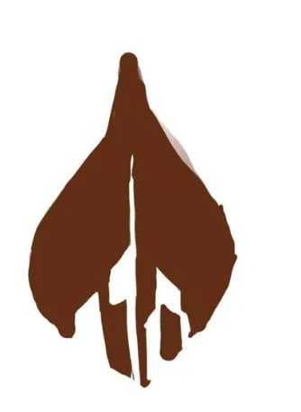
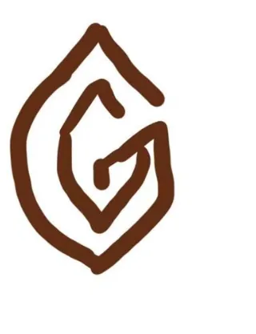
Assets
Five custom assets
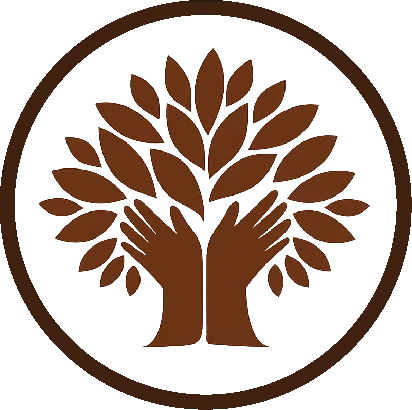
AI in the process
Designing with AI
GPT — Logo refinement
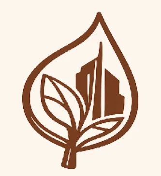
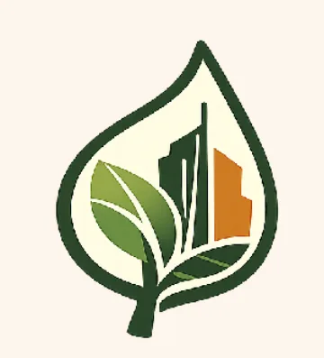
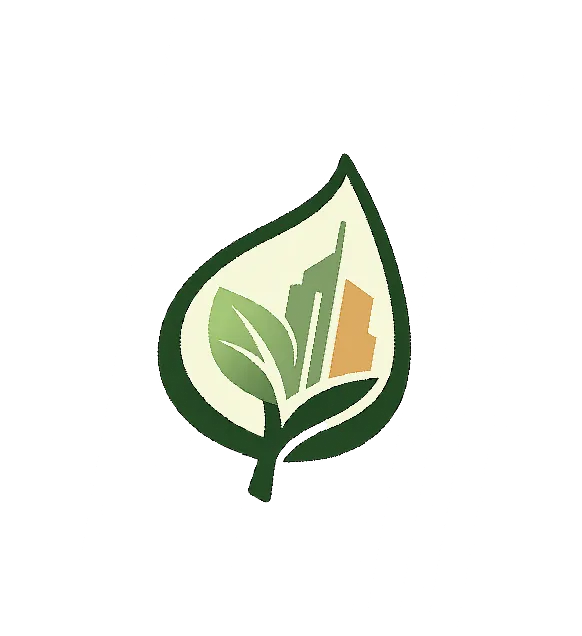
GPT — Icon refinement
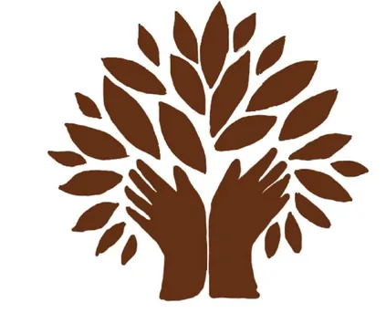
→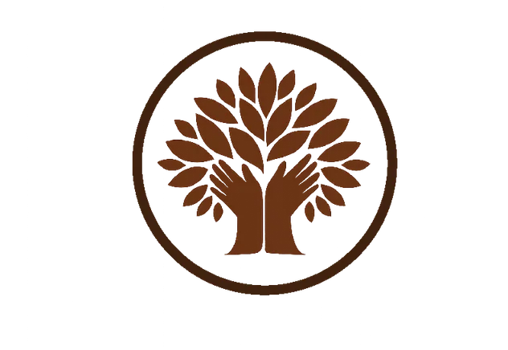
Cleaned the edges of the tree-and-hands icon, balanced the leaves and added a circular frame.
Adobe AI — Layout refinement
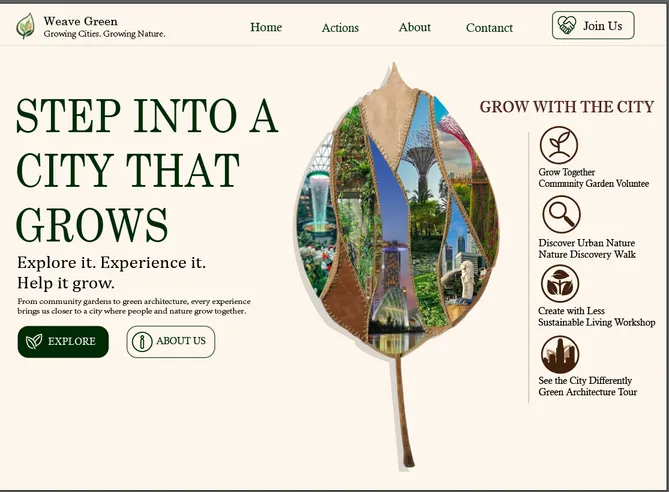
→Adjusted the composition, improved visual balance and reorganised content into a clearer layout.
Your turn
Weave the leaf back together.
Drag the six photos into the stitched frame. Each one snaps into place when it's close.
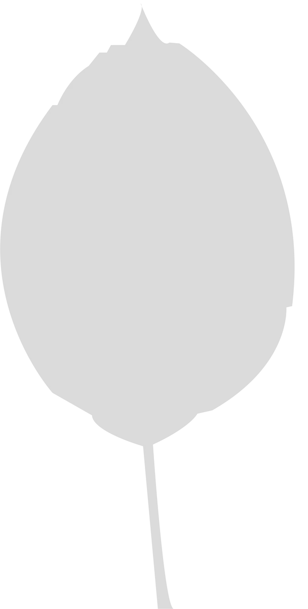
Leaf complete
You wove a greener city.
Every piece matters — like every tree planted, every bin sorted, every hour volunteered. Here's how you can help Singapore grow greener:
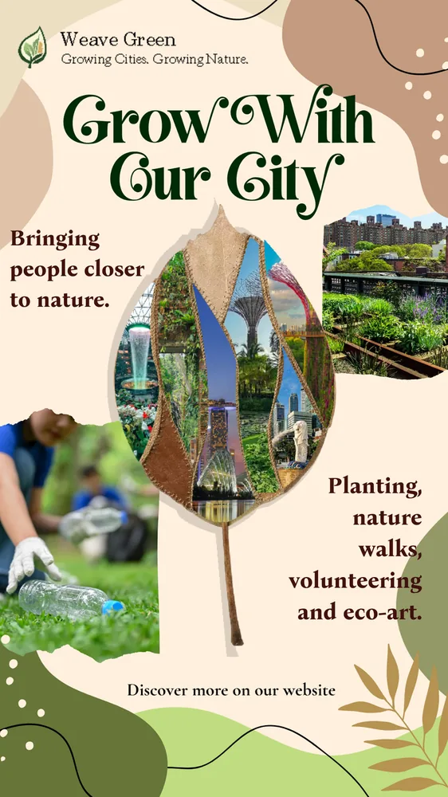
Social media
Instagram story
Short, direct messages — "Bringing people closer to nature" — around the central leaf collage. Two photos on either side, volunteering and an urban green space, show at a glance that the site connects community, nature and city life.